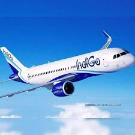

Indigo
InterGlobe Aviation Limited, doing business as IndiGo, is an Indian low-cost airline headquartered in Gurgaon, Haryana, India. It is the largest airline in India by passengers carried and fleet size, with a 61.6% domestic market share as of May 2024. It is the largest individual Asian airline, and one of the largest in the world in terms of passengers carried, with more than 100 million passengers carried in 2023. As of July 2024, IndiGo operates over 2,000 daily flights to 122 destinations – 88 domestic and 34 international, with a fleet of over 360 aircraft. It has its primary hub at Indira Gandhi International Airport, Delhi.The airline was founded as a private company by Rahul Bhatia of InterGlobe Enterprises and Rakesh Gangwal in 2006. It took delivery of its first aircraft in July 2006 and commenced operations a month later. The airline became the largest Indian carrier by passenger market share in 2012. The company went public in November 2015. IndiGo was ranked as the fifteenth most punctual airline globally in 2022 by OAG.

Air India
Air India is the flag carrier airline of India. It is owned by Air India Limited, a Tata Group enterprise and operates a fleet of Airbus and Boeing aircraft serving 102 domestic and international destinations. It is headquartered in Gurugram. The airline has its main hub at Indira Gandhi International Airport, Delhi and secondary hub at Chhatrapati Shivaji Maharaj International Airport, Mumbai alongside several focus cities across India. As of July 2023, the airline is the second-largest airline in India in terms of passengers carried, after IndiGo. Air India became the 27th member of Star Alliance on 11 July 2014.The airline was founded by J. R. D. Tata as Tata Airlines in 1932; Tata himself flew its first single-engine de Havilland Puss Moth, carrying air mail from Karachi to Bombay's Juhu aerodrome and later continuing to Madras (currently Chennai). After World War II, it became a public limited company and was renamed Air India. On 21 February 1960, it took delivery of its first Boeing 707 named Gauri Shankar and became the first Asian airline to induct a jet aircraft in its fleet. In 2000–01, attempts were made to privatise Air India and from 2006 onwards, it suffered losses after its merger with Indian Airlines. Another privatization attempt was launched in 2017, which concluded with ownership of the airline and associated properties reverting to the Tata Group in 2022.

Go-First
Go First, founded as GoAir, was an Indian low-cost airline based in Mumbai, Maharashtra. It is owned by the Indian business conglomerate, Wadia Group. It commenced operations on 4 November 2005 and operated a fleet of Airbus A320 aircraft in an all economy configuration.In 2021, the airline planned to launch an IPO to raise ₹36 billion (US$430 million). In 2023, the airline faced problems with the availability of Pratt & Whitney engines used on its entire fleet of A320 aircraft and alleged that the issue was impacting its operations. Subsequently, the airline ceased operations on 3 May 2023 and filed an application for voluntary insolvency before the National Company Law Tribunal.

Star-Air
Ghodawat Enterprises Pvt. Ltd. doing business as Star Air,[2] is an Indian commuter airline based at Kempegowda International Airport in Bangalore, Karnataka. It started operations in January 2019, offering flights within Karnataka state as well as to neighboring Andhra Pradesh, Gujarat, Madhya Pradesh, Rajasthan, Uttar Pradesh, Telangana & Maharashtra, as part of the Central Government's UDAN scheme. The airline makes use of Embraer 145 LRs and Embraer 175 for its services